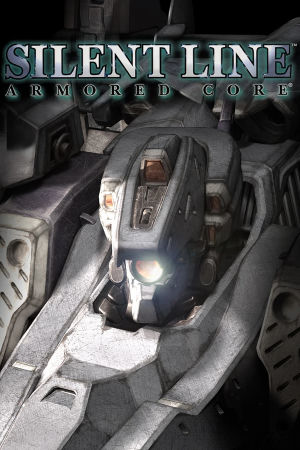

PlayStation 2, PlayStation Portable
Originally released on January 23rd, 2003 in Japan and in North America in mid-July 2003 under publisher Agetec, Silent Line: Armored Core is a mecha action game developed by FromSoftware for the PlayStation 2. A direct sequel to Armored Core 3, it continues that game's story, sending Ravens into the Silent Line, a mysterious zone beyond the Layered City populated by autonomous weapons and remnants of Evolver's neural network. New additions to the series formula include the ability to scan maps and new weapon types, alongside the deep garage customization the series is known for, letting players assemble their AC from hundreds of parts across head, core, arms, legs, and booster categories.
Silent Line was well received by fans of the series for its refined mission design, AI training system, and the sheer depth of its mech-building sandbox, and it stands as one of the final entries in the classic Armored Core era before the series moved on to Armored Core: Nexus. The game later received a handheld port known as Armored Core: Silent Line Portable, released for the PlayStation Portable in Japan in late 2009 and in North America in 2010, giving a new generation of players access to the PS2 classic on the go. For many enthusiasts it remains a high point of the old-school Armored Core experience, combining brutal mission variety with one of the most detailed mech editors of its time.
FromSoftware
- Official developer website.
Armored Core Wiki
- Contains lots of useful information about Armored Core games.
PCSX2 - The best PS2
emulator.
PPSSPP - The best PSP
emulator.
Silent Line: Armored Core Manual (JP, PS2)
- PDF copy of the PS2 manual in Japanese.
Silent Line: Armored Core Portable (JP, PSP)
- PDF copy of the PSP manual in Japanese.
Analog Controls Mod
- A mod that allows Silent Line to properly utilize dual analog stick controls.
Steam Grid DB (ACSL) - Contains lots of cool options for artwork that can be used in your Steam library.